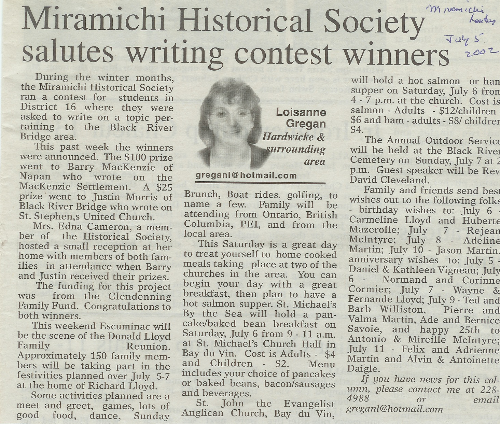

The Family Chronicle
No.25 July 9, 2002
__________
The Miramichi Historical Society conducted a writing contest on topics related to Black River. First prize went to Barry MacKenzie of Napan for “The ‘MacKenzie Settlement’ and Klondike Will’”. Another prize went to Justin Morris who wrote on St. Stephens Church. A full copy of Barry MacKenzie’s entry follows. Funding for prizes came from The Glendenning Fund.
__________________________________________________________________________
The “MacKenzie Settlement” and “Klondike Will”
By
Barry R. MacKenzie
The lives of all Miramichiers have been shaped by their ancestors, but few families have experienced as many hardships and setbacks as the MacKenzies of Little Branch, Black River Bridge, New Brunswick.
Known as the MacKenzie Settlement, this area in which they lived in the “Hardwoods” of Little Branch was settled prior to 1851 by Hector MacKenzie of Tabisuntac. Hector had immigrated to Canada in 1840 from the small community of Assynt in Sutherland, Scotland. He had been the son of a weaver, and had a brother Roderick that came to Canada with him in 1840. They were also accompanied by their sister, Euphemia, the wife of Alexander MacKenzie, and several other relatives.
Hector was alone for the most part as far as family was concerned – aside from his children and spouse- until Roderick made the pilgrimage to Black River about 1852 and decided to stay. The two brothers petitioned to the crown for a 100 acres each in the area in 1854, and from that moment on their home became known as MacKenzie Settlement.
When Roderick MacKenzie came to Canada in 1840, he brought with him his wife, Katherine, a young son John, and the will to have success in the wild frontier of the New World. His stay in Tabisuntac for approximately twelve years saw him apply for land there, and he and Katherine had two additional children: Isabella, who married, and Annie, who remained a spinster. The first in a long series of setbacks struck the family about 1845 when Katherine MacKenzie passed away of causes yet unknown. Realizing that his three young children needed a mother to care for them, Roderick remarried to Isabella MacDonald of Black River. Although he remained in Tabisuntac for a while after Katherine’s death, he took his family, which now consisted of two additional children, Alexander and Murdock, to live near brother Hector and his seemingly prosperous family.
Roderick and his growing family built a house on the north side of the MacKenzie Road opposite Hector, and began to clear the land that was so necessary to their survival. The family was active in church. The late George Godfrey, formerly of Black River, recalls Roderick and John walking down from the settlement to church on Sunday morning and having dinner with his family. Hector and his family moved away from the settlement before 1871.
Isabella MacKenzie married Alexander MacKay and moved to the USA. Few local connections exist with this branch of the family. She died there in 1932. Annie remained a spinster and lived in the MacKenzie settlement until her death in 1918 after suffering with pneumonia.
Alexander was known to be somewhat hateful, and spent several years outside the county, as he is missing from two censuses in 1871 and 1881. He was the last MacKenzie to live in the settlement, leaving there just after 1900. He lived in a home near John and Rebecca Fowlie in Little Branch after that, and left much of his “wealth” to Mr. And Mrs. Fowlie when he died in 1920.
Murdock was very active in the church, being a trustee in 1886, as he is listed on a land transaction that year. He is reputed to have been quite strong, as a huge boulder that sits beside the old well in the settlement was supposedly carried up from the ground by none other than Murdock himself. In his thirty-seventh year, Murdock suddenly died and became the first MacKenzie buried in the Black River Cemetery.
It was the family of John MacKenzie, Roderick’s eldest son, that suffered the greatest hardships of all. John was of a rugged constitution, and worked hard and long days cultivating the one-hundred acre farm he had applied for and was granted. On a particular day, about 1882, John suffered a near-fatal fall from the loft of his barn, and broke his back. Due to the lack of medical assistance available, and likely to his lack of money to afford any, John’s back went unset, and he spent the following four years in bed, unable to move or do anything. His wife, Elizabeth, the daughter of William McKnight, who had been born to another of the Miramichi’s great pioneering couples, was forced to do the farm work with the assistance of her daughter Kate and son. William. When John MacKenzie died in bed in September 1886, he left behind a family of three children and a wife, who was forced to live in very isolated conditions, with few neighbours besides their grandparents across the road. They had to manage without him.
The 1890’s hit the family hard again. Roderick and Isabella both died in 1893. In 1896, Kate, who was working in Roslindale (near Boston), Massachusetts, wrote home saying that she was not feeling well, and died of tuberculosis a few months later. She was only twenty one years old.
The following year the middle child, William A. MacKenzie, who realized that the Miramichi held few possibilities for him, decided to head west on the Harvest Excursion. He eventually worked his way out to British Columbia, where he spent time in the lumber woods cutting the great redwoods of the western forest. The conditions of the primitive logging camps and the measles he contracted while in B.C. quite possibly contributed to his next decision.
Ruling out lumbering as the ideal job, Will resolved to travel north to Dawson City, Yukon, and the Gold Rush. On May 21, 1898, W. A. MacKenzie landed in the Yukon off of Boat 96 from New Westminster, B. C. Conditions were deplorable in the cabins at this point in history, and many nights he went hungry, we can be sure. His cabin remained standing until the 1980’s, and photographs of it then show how basic and rustic it was. There were no frills to life in the Klondike, no more than there had been in the Settlement back home.
Will became great friends with a man named “Black” Mike Winage, a well known figure of the Gold Rush, who passed away in Dawson City in the 1970’s at the age of 107. Will applied for two grants for placer mining while panning in the Klondike, and by 1906 he had apparently made his fortune, because he headed home.
After traveling down through San Francisco and other parts of the U.S., Klondike Will – as he became known – returned to the Mackenzie Settlement, only to find that his mother and sister, Janie, had given up the settlement and moved into Black River with James “Chubb” Cameron and his son Hedley. After over 50 years of hard work and determination to clear the land, the settlement stood empty of activity once again, and most disappointingly, of MacKenzies.
The following years saw things go better for the family, as Will and Jane both married and lived good long lives. Will’s family was raised in Napan, and his mother passed away peacefully in 1922.
Although the early years of life for the MacKenzies and their Settlement at Little Branch were very difficult and full of hardships, they have overcome it all, and have made their mark. Will MacKenzie’s funeral in 1957 was one of the largest seen in this area, and his children became well respected citizens after him.
Roderick MacKenzie and his family showed that hardships can be overcome, and were better for them. The MacKenzie Settlement is now deserted and grown up in alder bushes, but memories and stories linger on of those early days when life was simple however challenging.
__________________________________________________________________________
Glendenning Fund
The Glendenning Fund is a permanent endowment established by descendants of Elmer and Jane (Watling) Glendenning of Little Branch, Black River Bridge, New Brunswick. Income from Fund will be used to make grants for any activity which which contributes to the quality of life for residents of the community of Black River. Contributions are tax deductible (No. 89001 1190 RR 0001).
As its first activity, a grant from the Glendenning Fund was made to the Miramichi Historical Society for the purpose of encouraging students to learn about some historical aspect of Black River. The winning essay is printed above. We would welcome your suggestions for projects for future years.
Our thanks to the following contributors:
Venetia Russell Ken Glendenning Norman Glendenning Don Glendenning
Mary Glendenning Margaret Gibson Bill & Doreen Nicol Keith Glendenning
Brian Glendenning Janet Glendenning Julie Williston
Chronicle is an occasional newsletter published by Don Glendenning It is intended to solicit and provide information about family tree matters. Comments, enquiries and information may be sent to 62 Queen Elizabeth Drive, Charlottetown, PEI, C1A 3A9. Tel:902 892 5859 Email dglende@attglobal.net. Feel free to make and pass along copies of this newsletter
_____________________________________________________________________________________________
Here is my contribution to the Glendenning Family Fund
.
I hereby direct that the gift noted below (or any property substituted therefor) made to the Community Foundation
of Prince Edward Island, Revenue Canada Business No. 89001 1190 RR 0001, be held in perpetuity.
Amount: ____________ Date of Gift: _____________
Please send a receipt to:
Name: _________________________________________________ Address: ____________________________
____________________________________________________________________________________________
Postal Code; ____________ Phone No.__________________ Signature: __________________________
The Community Foundation of Prince Edward Island
Suite 105, Queen Square Centre, 119-121 Queen Street, Charlottetown, PE C1A 4B3 Tel: (902) 892-3440
